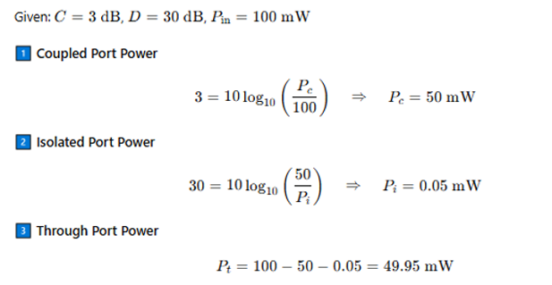
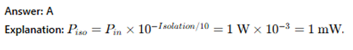
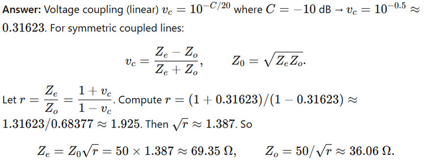
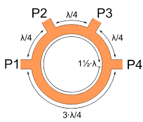

Answer:
Answer:
Answer:
Answer:
Because it splits an input into two outputs of equal amplitude that are 90° out of phase. Application: image rejection mixers, single-sideband modulators, and balanced amplifiers where 90° phase shift is required.
Answer:
The rat-race coupler is a four-port passive RF/microwave device made from a ring of transmission line with a total length of 1.5λ (3λ/2).
Three sections of the ring are λ/4 each.
One section is 3λ/4.
The ports are placed at 90° intervals around the ring.
Working Principle
When an input signal is fed at Port 1, it splits equally into Port 2 and Port 4, but with a 180° phase difference. Port 3 is isolated.
If excited at Port 3, the output at Ports 2 and 4 is equal in magnitude and in phase. Port 1 is isolated.
Thus, it functions as a 180° hybrid power divider/combiner.